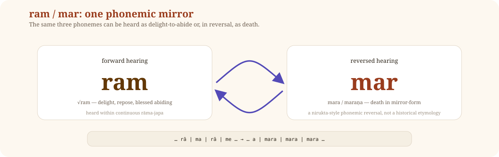

జపించే నామంలో దాగి ఉన్నది ఏమిటి
ॐ
విష్ణువు అవతారాలలో శ్రీరాముడు ఒక ప్రత్యేక ప్రకాశం. కృష్ణుడు మాయాజాలంతో ముంచుతాడు, నరసింహుడు ఉగ్రంగా విరుస్తాడు, వామనుడు ఆశ్చర్యపరుస్తాడు; కానీ రాముడు మరొక రీతిలో నిలుస్తాడు — మర్యాదా పురుషోత్తముడుగా. ఆయనలో ధర్మం కేవలం సిద్ధాంతంగా దిగదు; నడుస్తుంది, మాట్లాడుతుంది, బాధపడుతుంది, ఆపుకుంటుంది, అయినా కాంతి కోల్పోదు. అందుకే “రామ” అనే నామం కేవలం ఇతిహాసపాత్ర పేరు కాదు. అది పలికినపుడు చాలామందికి దేవసాన్నిధ్యం నోటికి దగ్గరైన రూపం.
అందుకే శివుడు స్వయంగా ఈ నామాన్ని మహిమతో పలకడం సాధారణ విషయం కాదు. ఈ శ్లోకం శతాబ్దాలుగా ఇంట్లో, ఆలయంలో, ప్రయాణంలో, మరణసమయంలో, మనోధైర్యం చీలిపోయిన వేళలో కూడా జపింపబడింది. దీని వివిధ పాఠాలు ఉన్నాయి. కాబట్టి ముందుగా పాఠాన్ని స్పష్టం చేసి, ఆ తరువాత దాని అంతర్గత నిర్మాణాన్ని చూడాలి.
రెండు పాఠాలు
పద్మపురాణ పాఠం
పురాతనంగా సాక్ష్యమున్న పాఠం పద్మపురాణ ఉత్తరఖండంలో కనిపిస్తుంది:
रामरामेति रामेति रमे रामे मनोरमे ।
सहस्रनामतत्तुल्यं रामनाम वरानने ॥rāmarāmeti rāmeti rame rāme manorame
sahasranāmatattulyaṃ rāmanāma varānane
ఇక్కడ ప్రారంభంలో శ్రీ లేదు. “రామేతి, రామేతి” అనే నిర్మాణం రెండు స్వతంత్ర నామోచ్చారణలుగా ఉంది. ఇక్కడ ఇతి అనే సూచన శబ్దం వాక్య నిర్మాణంలో ముఖ్య భాగం.
విష్ణుసహస్రనామ ప్రాచలిత పాఠం
श्रीरामरामरामेति रमे रामे मनोरमे ।
सहस्रनामतत्तुल्यं रामनाम वरानने ॥śrīrāmarāmarāmeti rame rāme manorame
sahasranāmatattulyaṃ rāmanāma varānane
ప్రచలిత విష్ణుసహస్రనామ పాఠంలో మూడు మార్పులు కనిపిస్తాయి: ప్రారంభంలో శ్రీ చేర్చబడింది; రెండుసార్లు వచ్చే “రామేతి” స్థానంలో త్రివార నామోచ్చారణ స్వరూపం ఏర్పడింది; సంభాషణ నారదుని నుంచి పార్వతీకి మళ్లింది. అయినా రెండింటి కేంద్ర వాక్యం ఒకటే: రామనామం సహస్రనామానికి తుల్యం.
శివుడు చెప్పేది ఏమిటి
ఈ శ్లోకాన్ని ముందుగా భక్తితో వినాలి. మొదటి పాదం జపమే. రెండవ పాదం ఫల వాక్యం. “రామనామం సహస్రనామానికి సమానం” అని శివుడు చెబుతున్నాడు. ఈ వాక్యం శతాబ్దాల భక్తిజీవితాన్ని మోసింది. కానీ ప్రశ్న ఇక్కడ నుంచే పుడుతుంది: ఒకే నామంలో అటువంటి ఘనత ఎలా చేరింది?
రెండు పాఠాలు పంచుకునే గుండె
రమే రామే మనోరమే అనే భాగం స్థిరంగా ఉంటుంది. ఇక్కడ సూక్ష్మమైన వ్యాకరణ కౌశలం ఉంది. రమే అనేది √రమ్ ధాతువు నుంచి వచ్చిన “నేను ఆనందిస్తాను” అనే క్రియారూపం. రామే అనేది “రామునిలో” అనే లోకేటివ్. ఒక్క దీర్ఘం-హ్రస్వం తేడా మాత్రమే వినిపిస్తుంది; కానీ అర్థంలో అనేక లోకాలంత దూరం ఉంది. ఒకటి భక్తుని అంతర్గత కదలిక; మరొకటి ఆ ఆనందానికి ఆలంబన.
ఈ వ్యాసం చేసే పని
ఇక్కడ మూడు స్థాయిలు వేరు వేరుగా నడుస్తాయి. మొదటిది స్వరూప-గణిత విశ్లేషణ: ఎక్కడ విభజన సాధ్యం, ఎన్ని పఠనాలు వస్తాయి. రెండవది వ్యాకరణం: ఏ విభజనకు ఏ అర్థం వస్తుంది. మూడవది భక్తి-నిరుక్తి పఠనం: ధ్వనుల మధ్య దాగి ఉన్న భావసూచనలు. ఇవి ఒక్కటే కాదు; కలిపి వేస్తే సడలిపోతాయి. వేరు వేరు ఉంచితే శ్లోక గాంభీర్యం మరింత స్పష్టమవుతుంది.
తంతువు: ఖాళీలు లేకుండా వ్రాసిన పాదం
रामरामेतिरामेतिरमेरामेमनोरमेrāmarāmetirāmetiramerāmemanorame
ఈ పాదాన్ని ఖాళీలు లేకుండా వ్రాస్తే అసాధారణ నిర్మాణం బయటపడుతుంది. సాధారణ భాషలో ఖాళీలు తీసేస్తే పద విభజన చెదిరిపోతుంది. కానీ ఈ పాదంలో విభజన స్థానాలు అద్భుతమైన నియమంతో వస్తాయి. మొత్తం 15 సహజ విభజన స్థానాలు ఉన్నాయి. ఆశ్చర్యం ఏమిటంటే — ప్రతి రెండేసి అక్షరాలకొక విభజన అవకాశం ఉంటుంది. ఎక్కడా అడ్డంగా, ఎక్కడా అసమానంగా కాదు.
rā | ma | rā | me | ti | rā | me | ti | ra | me | rā | me | ma | no | ra | me
పద్మపురాణ పాఠంలో ఇది సంపూర్ణ సమమితి. విష్ణుసహస్రనామ ప్రాచలిత పాఠంలో ముందున్న శ్రీ వల్ల తొలి ఖండం మాత్రమే మూడు అక్షరాలదవుతుంది; మిగిలిన నిర్మాణం దాదాపు అదే. అందువల్ల పద్మపాఠం గణితంగా మరింత పూర్ణ రూపం పొందుతుంది.

పర్వతం: 15 ద్వైత నిర్ణయాల నుండి 32,768 పఠనాలు
పదిహేను విభజన స్థానాలు
ప్రతి విభజన స్థానంలో రెండు అవకాశాలే ఉన్నాయి: కోయాలి లేదా కోయకూడదు. పదిహేను చోట్ల ఈ ద్వి-నిర్ణయం ఉండగా మొత్తం పఠనాల సంఖ్య 2^15 = 32,768. ఇక్కడ కేవలం సంఖ్య పెద్దది అనటం ముఖ్యం కాదు. సాధారణ వాక్యానికి ఇలాంటి విభజనలు ఎక్కువగా అర్థరహిత ధ్వని-చూర్ణాన్ని మాత్రమే ఇస్తాయి. కానీ ఈ రామపాదం కనీస విభజనలోనూ, గరిష్ఠ విభజనలోనూ సజీవ syllabic units ని ఇస్తుంది.
మేరు ప్రస్తారం
ఈ 32,768 పఠనాలను ఎన్ని కోతలు పెట్టామనే ప్రమాణంతో క్రమబద్ధం చేస్తే బైనమియల్ పంపిణి వస్తుంది: 1, 15, 105, 455, 1365 ... 6435 వరకు పైకి ఎగసి, మళ్లీ అదే క్రమంలో దిగుతుంది. భారతీయ ఛందస్సు-గణిత సంప్రదాయంలో ఇది మేరు ప్రస్తారం. పాశ్చాత్య గణితంలో దీనిని పాస్కల్ త్రిభుజం అంటారు. ఇక్కడ పదిహేనవ వరుస మనకు వర్తిస్తుంది.

ఈ పర్వతం ఎలా కనిపిస్తుంది
శూన్య విభజనలో ఒకే పఠనం. ఒక్క కోతతో 15. రెండుతో 105. ఏడు, ఎనిమిది కోతల వద్ద 6435 చొప్పున శిఖర జంట. ఆ తరువాత మళ్లీ ప్రతిబింబంలా దిగుతుంది. ఇది కేవలం గణితం. కానీ ఇక్కడ గణితం నింపబడింది జీవించే అక్షరాలతో, ఉచ్చరించగల బీజాలతో, భావసాధ్య విభజనలతో. అదే ఈ శ్లోకం ప్రత్యేకత.

సంప్రదాయం నిలిచింది ఎక్కడ
ఇక్కడ అత్యంత ముఖ్యమైన బిందువు ఇది: సంప్రదాయంగా జపించబడే పాఠవిభజన యాదృచ్ఛికంగా ఎక్కడో నిలవలేదు; అదే ఈ పర్వత శిఖరస్థాయిలో నిలిచింది. పద్మపురాణ పాఠం గానీ, ప్రాచలిత పాఠం గానీ — రెండూ లేయర్ 8 వద్ద నిలుస్తాయి. అనగా సంప్రదాయం సంఖ్యాక శిఖరంపై నిలిచింది.
| లేయర్ | పఠనాల సంఖ్య | వ్యాఖ్య |
|---|---|---|
| 0 | 1 | అఖండ తంతు |
| 1 | 15 | ఒక్క కోత |
| 2 | 105 | ద్వి విభజన |
| 7 | 6435 | శిఖరానికి ముందు |
| 8 | 6435 | సంప్రదాయ పఠనం నిలిచిన శిఖరం |
| 15 | 1 | 16 సూక్ష్మ బీజ ఖండాలు |
ఏడు పఠనాలు
ఈ శ్లోకం ఒక్క అర్థంలో బందీ కాదు. అది అనేక భారతీయ దర్శన మార్గాలకు తలుపు తెరుస్తుంది. అవి ఎటువంటి స్వేచ్ఛానువాదాలూ కావు; భాష, ధ్వని, నామస్మరణ, రూప-అరూపాల మధ్య సంచరించే అవకాశ దారులు.
1. భక్తి పఠనం
ఇది అత్యంత సరళమైనది, అత్యంత గాఢమైనది కూడా. “రామ, రామ” అని పిలుస్తూ, “రామునిలోనే నేను ఆనందిస్తాను” అని శ్లోకం చెబుతుంది. ఇక్కడ భక్తుడు, నామం, ఆనందం — మూడు వేర్వేరు కాదు.
2. జ్ఞాన పఠనం
నామం సంఖ్యాతీతాన్ని సంక్షిప్తం చేస్తుంది. సహస్రనామానికి తుల్యమని చెప్పడం అర్థం, నామం అనేకత్వాన్ని మించి ఉన్న కేంద్రీకృత సత్యాన్ని మోస్తోందని సూచన. ఒక నామంలో సహస్రరూపాల సంగ్రహం.
3. శాక్త పఠనం
ధ్వని, బీజ, స్పందనాల పరంగా చూస్తే ఈ పాదం మృదువైన మంత్రశరీరంలా కనిపిస్తుంది. “రా”, “మ”, “తి”, “నో” వంటి ఘటకాలు కేవలం అక్షరాలు కాదు; శక్తి-నాడులు.
4. మంత్ర పఠనం
మంత్రం యాదృచ్ఛిక పదసముచ్ఛయం కాదు. ఉచ్చారణ, పునరావృతం, విభజన, శ్వాస-సమయాన్ని మోసే శరీరం. ఈ శ్లోకంలో అదే అతి కచ్చితంగా ఉంది.
5. అద్వైత పఠనం
“రమే” అనే భక్తుని అంతర్గత కదలిక, “రామే” అనే ఆధ్యాత్మిక ఆలంబన — ఇవి ధ్వనిలో దాదాపు కలిసిపోతాయి. అప్పుడు భక్తుడు-భజ్యము ద్వైతమే చివరికి ఒకే ప్రకాశంలో నిలిచినట్లు భావం ముందుకొస్తుంది.
6. ఆత్మ పఠనం
నామజపం మరణభీతిని కరిగించే అంతర్గత స్థితి. శబ్దం ద్వారా మనస్సు సమాహారమై, అంతిమంగా నామం ఆత్మస్వరూపానికి ద్వారం కావచ్చనే వేదాంత-భక్తి కూడిక ఇక్కడ దాగి ఉంది.
7. లీలా పఠనం
ఈ పాదం కఠిన యంత్రనిర్మాణం కాదు. అది ఆడుతుంది. పునరుక్తి, ప్రతిధ్వని, ధ్వని-మృదు లయ, తిరుగుబాటు లేకుండానే తిరిగి వచ్చే వాక్యశక్తి — ఇవన్నీ లీలా భావాన్ని ఉత్పత్తి చేస్తాయి.
సరిహద్దుల్లో దాగి ఉన్నది
ప్రతి కోత స్థానం ఒక కొత్త అర్థప్రవేశద్వారం. ఎక్కడ విభజిస్తామో అక్కడ భావం మారుతుంది. కానీ విచిత్రం ఏమిటంటే — విభజన పెరిగేకొద్దీ కూడా పూర్తిగా అర్థరహిత పదార్థం కూలిపోదు. ఇది ఈ శ్లోకానికి సాధారణ కవిత్వం దాటిన నిర్మాణ స్థిరత్వాన్ని ఇస్తుంది.
నామం మరియు మరణం
రామనామం శతాబ్దాలుగా మరణసమయంలో జపింపబడటానికి కారణం కేవలం ఆచారం కాదు. పునరావృత ధ్వని మనస్సును విచ్ఛిన్నం కాకుండా ఒకే కేంద్రానికి తిరిగి తీసుకువస్తుంది. సహస్రనామ సమత్వ వాక్యం ఈ భక్తి-అనుభవాన్ని సిద్ధాంత భాషలో గట్టిపడేస్తుంది.
పునరావృత్తి వ్యాకరణం
ఇక్కడ పునరుక్తి యంత్రపునరావృతం కాదు. “రామేతి రామేతి”లో నామం రెండుసార్లు వచనంగా పుడుతుంది. ప్రాచలిత పాఠంలో “రామ రామ రామేతి”గా అది ఆవాహన ఘనతను పొందుతుంది. రెండూ భిన్న రుచులు; రెండూ భక్తి పరంపరలో స్థానం పొందినవే.
సామ గానం వైపు సూచన
ఈ పాదం పలికేటప్పుడు అది కేవలం పఠనం కాదు; గానానికి దగ్గరవుతుంది. దీర్ఘ-హ్రస్వ, పునరుక్తి, శ్వాసచాలన, నామ-అవసాన ప్రతిధ్వని — ఇవి సమవేదీయ గాత్రానుభూతికి దూర సూచనలుగా కనబడతాయి.

బీజాక్షరాలు
లేయర్ 15 వద్ద మొత్తం పాదం 16 సూక్ష్మ ఖండాలుగా విభజించబడుతుంది. ఇవి శబ్దబీజాల్లా పని చేస్తాయి. మంత్రదేహం అంతిమంగా అణు-స్థాయికి చేరినట్లవుతుంది. ఈ స్థాయిలో పదార్థం చిన్నదవుతుంది; కానీ శబ్దశక్తి తగ్గదు.

మర/రామ ప్రతిపత్తి
భక్తి సంప్రదాయంలో “మర” నుండి “రామ”కు తిరిగే కథ మంత్రధ్వని యొక్క అంతర్గత మార్పు-శక్తిని సూచిస్తుంది. ఈ వ్యాసంలో దానిని కఠిన భాషా-సాక్ష్యంగా కాదు, భక్తి-నిరుక్తి సూచనగా మాత్రమే చదవాలి. అయినా ధ్వని తిరుగుడు ఇక్కడ నామరహస్యానికొక అందమైన అంచు ఇస్తుంది.

ముప్పై రెండక్షరాల్లో పదిహేను థీములు
32 అక్షరాలు ఉన్న ఈ పాదం 15 సహజ విభజన స్థానాలను కలిగి ఉండటం యాదృచ్ఛికం కాదు అనిపించే స్థాయిలో కట్టుదిట్టంగా ఉంది. సంఖ్యా-నిర్మాణం, వ్యాకరణ-సూక్ష్మత, భక్తి-పునరావృతం, శ్వాస-లయ, బీజత్వం — వీటన్నింటి సంగమంతో ఈ పాదం చిన్నదైనా గంభీరంగా నిలుస్తుంది.
బీజం నుండి వృక్షం
సహస్రనామం ఒక విస్తార వృక్షంలాంటిదైతే, ఈ రామనామ శ్లోకం దాని బీజంలా నిలుస్తుంది. శివుడు “సహస్రనామతత్తుల్యం” అన్నప్పుడు పరిమాణం గురించి మాత్రమే కాదు, సారగర్భత గురించి కూడా చెబుతున్నాడు. వెయ్యి పేర్లు విస్తరణ అయితే, రామనామం సంకోచిత గర్భం.
శివుడు ఉద్దేశించినది
శివుడు ఇక్కడ భక్తులకు సంక్షిప్త మార్గం ఇస్తున్నాడు. దీర్ఘసహస్రనామ పఠన ఫలాన్ని తగ్గించడం కాదు; ఒకే నామంలో అదే పరిమళం, అదే కేంద్రీకరణ, అదే దైవస్పందన సాధ్యమని చెబుతున్నాడు. ఇది సౌలభ్య ప్రకటన మాత్రమే కాదు; నామస్వరూపంపై గంభీర తీర్పు.
ఇక్కడ కొత్తది ఏమిటి
- పద్మపురాణ పాఠంలోని 32 అక్షర-15 విభజన స్థానాల సమపాళ్ల నిర్మాణాన్ని గణితంగా చూపడం.
- రెండు పాఠాలనూ విడదీసి, ఏది పూర్వం, ఏది నిర్మాణపరంగా మరింత సమపాళ్లదో స్పష్టం చేయడం.
- మేరు ప్రస్తారంతో ఈ పాదం మధ్య ఉన్న సంబంధాన్ని కేవలం ఉపమానంగా కాక, ఖచ్చిత సంఖ్యా నిర్మాణంగా చూపడం.
- వ్యాకరణ, గణితం, భక్తి-నిరుక్తి — ఈ మూడింటిని కలిపేసకుండా, వేరువేరు స్థాయిలుగా నిర్వహించడం.
పరిశిష్టం A: ఫలితాల వర్గీకరణ
నిర్మాణపరంగా ప్రత్యక్షంగా గమనించగలవి
- 32 అక్షరాలు, 15 సహజ విభజన స్థానాలు.
- మొత్తం 32,768 సాధ్య విభజనలు.
- లేయర్ పంపిణి మేరు ప్రస్తార వరుస 15కు అనుగుణం.
- సంప్రదాయ పఠనం శిఖర లేయర్ 8 వద్ద నిలుస్తుంది.
వ్యుత్పత్తి/వ్యాకరణ ఆధారంగా వచ్చినవి
- రమే = “నేను ఆనందిస్తాను”; రామే = “రామునిలో”.
- పద్మపాఠం “quotation structure”ని కాపాడుతుంది.
- ప్రాచలిత పాఠం ఆవాహన-జప రూపాన్ని బలపరుస్తుంది.
భక్తి-అనుభవ పఠనాలు
- మరణసమయంలో రామనామ జపానికి ఉన్న అంతర్గత శక్తి.
- mara → rāma ధ్వని-తిరుగు సూచన.
- బీజాక్షర స్థాయిలో మంత్రశరీర పఠనం.
పరిశిష్టం B: పద్మపురాణ పాఠం — సూక్ష్మ ఖండాలు
rā | ma | rā | me | ti | rā | me | ti | ra | me | rā | me | ma | no | ra | me
పరిశిష్టం C: మంత్రరూపాన్ని కాపాడే నియమం
తెలుగు రూపాంతరంలో కూడా మంత్ర పాదం సంస్కృతములోనే ఉంచబడింది. ఇది ఉద్దేశపూర్వక నిర్ణయం. భావవ్యాసం తెలుగులో ఉండవచ్చు; మంత్రం మాత్రం తన స్వరూపంలో ఉండాలి. లేకపోతే విశ్లేషణ భాషా మార్పు వల్లే దెబ్బతింటుంది.
ఈ తెలుగు రూపం పదక్షర అనువాదం కాదు. భావం, భక్తి, గణిత నిర్మాణం, మంత్రస్వరూపం — ఈ నాలుగింటినీ కలిసి నిలిపే విధంగా సజీవ తెలుగు గద్యరూపంగా మళ్లీ రచించబడింది.